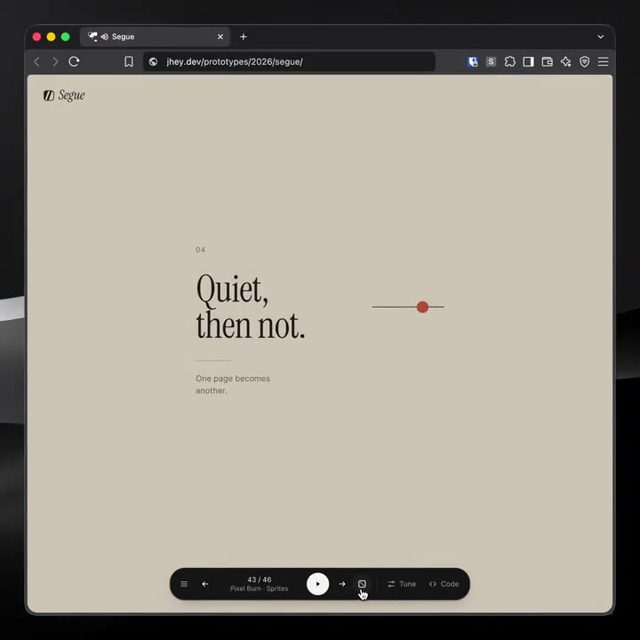
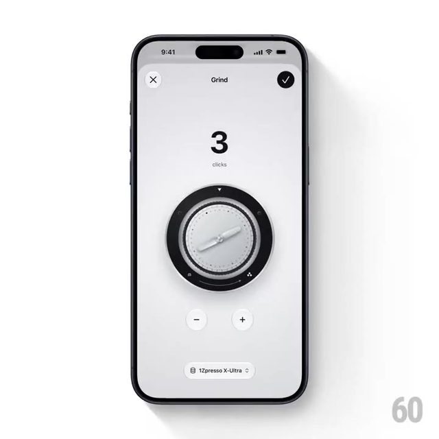
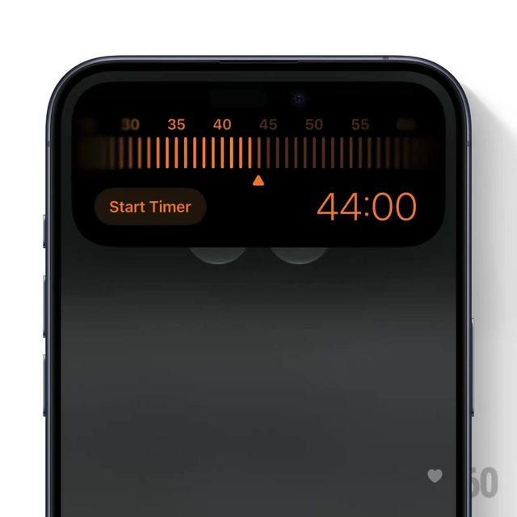
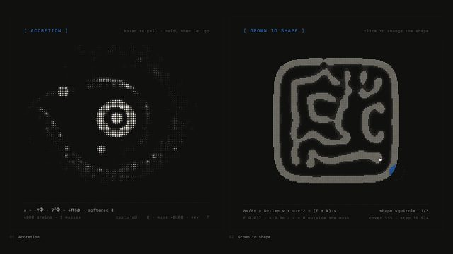

点封面在页面里播放（Vimeo / YouTube / X 需要代理；Vimeo 若没自动开始，再点一下播放键）。觉得好就点「喜欢」，有想法就写在下面的框里保存，我每天出日报前会读，存进偏好和审美库；会多找同类，但每天仍保持类型分散。
目录 01 How Does Ketamine Work?（竖屏短片）02 Porsche「The Long Way to "I Do"」03 Segue：46 种网页翻页转场04 These sliders look so polished（旋钮数字）05 countdown slider island（灵动岛计时）06 Interaction lab（交互实验室）07 You Will Only Like Half of This Video08 What if you didn't brush your teeth for a year?09 What if We Can't Detect Dark Matter?10 Scary stories to watch in the dark（合集，第 1 章 The Curse of the Monkey's Paw）－ 看完剔除（7 条）拆 细拆：Kurzgesagt 氯胺酮竖屏
01 知识讲解 MG 剪辑节奏
How Does Ketamine Work?（竖屏短片）
Kurzgesagt · YouTube 10-29 【看过视频】（完整看过）
71 秒全片已下载并完整看过
好在哪 71 秒竖屏讲氯胺酮怎么起作用：深紫底上的扁平插画，蓝色神经网络里一串黄点在流动。说到「K Hole」时，像素风大字在暗紫色里像漩涡一样转着放大。讲耐受性时换青绿网格底，一条红折线一点点画出来可借 竖屏科普可以直接照搬：全片锁定一套深色底加一两种荧光色，5 秒左右换一个镜头，换层级就用镜头穿过去。细拆见文末
展开全文
02 转场 实物动画
Porsche「The Long Way to "I Do"」
Em Cooper × Tonic DNA（代理 adam&eve\TBWA） · Vimeo / Stash 10-30 【看过画面（抽帧）】
35 秒全片已下载，抽帧看过
好在哪 35 秒，全片是会动的油画：一对夫妻修好一台 1966 年的蓝色保时捷 912，一路开去旧金山结婚。没有一刀剪辑，海岸大桥、人脸、婚礼蛋糕都是笔触慢慢涂掉、再长出下一幕。蓝色手绘标题卡开场，保时捷 logo 收尾可借 回忆、时间线这类内容可以不用硬切：上一幕慢慢溶解成颜料或粒子，再聚成下一幕。代码里用噪声溶解加形状变形就能做出近似感觉
展开全文
03 代码动画 转场 字体版式
Segue：46 种网页翻页转场
jhey（jh3yy） · X 10-29 【看过画面（抽帧）】

X ↗ 26 秒全片已下载，抽帧看过
好在哪 米灰色页面上一句大号衬线字，比如「Quiet, then not.」「Turn the page.」，每翻一页换一种转场：红黄黑竖条像门一样拉开、箭头形色块扫过、一条红线横切。底部一条小控制栏写着「23 / 46 Doors · Splits」，还能调参数、看代码。衬线字体未识别可借 这 46 种都是 CSS 写的，可以当转场菜单挑：竖条开门、色块扫屏这类在 Remotion 里用几个矩形加错开的时间就能做，章节切换比淡入淡出有劲
展开全文
04 UI动效
These sliders look so polished（旋钮数字）
60fps · X 10-30 【看过画面（抽帧）】

X ↗ 帖子里有 4 段，只下载并看了第 1 段（26 秒）
好在哪 白色手机界面中间一个带细纹的金属圆旋钮，拧动时上方的大数字像老式里程表一样上下滚，滚的时候带一点模糊，停下来变清楚。整屏只有黑白灰可借 讲数字变化（参数量、价格）时，数字不要直接换，做成一位一位竖着滚、滚动中加一点动态模糊，停住时再清楚，看起来就很精致
展开全文
05 UI动效 数据可视化
countdown slider island（灵动岛计时）
60fps · X 10-29 【看过画面（抽帧）】

X ↗ 7.8 秒全片已下载，抽帧看过
好在哪 iPhone 灵动岛展开成一条橙色刻度尺，手指左右拖，指针附近的刻度更亮更高，右边的时间从 15:00 跳到 1:13:00 再回到 1:00。黑底只有一种橙色可借 做数值滑动的画面时，可以让指针附近的刻度变亮变高、远处的变暗，一眼就知道现在指在哪；颜色全片只留一种强调色
展开全文
06 代码动画 字体版式
Interaction lab（交互实验室）
Emil Kowalski · X 10-29 【看过画面（抽帧）】

X ↗ 46 秒全片已下载，抽帧看过
好在哪 深灰底，所有界面都是等宽字体，标题写成「[ PALIMPSEST ]」「[ REACTION-DIFFUSION ]」这种方括号。左边一段文字在草稿和定稿之间来回改写，右边点阵组成的斑纹自己生长，还有拉伸变形的「flow」字和一圈旋转的环形文字可借 讲「AI 在想什么」这类抽象过程，可以借这种终端风：深灰底、等宽字、方括号标题，加一个文字被一点点改写的效果，比套科技蓝光更克制
展开全文
07 知识讲解 MG
You Will Only Like Half of This Video
Kurzgesagt · YouTube 10-20 【看过画面（抽帧）】
全片 3 分 33 秒，只下载、看了前 2 分钟
好在哪 Kurzgesagt 招牌扁平插画，小鸟角色当主持；讲网上低质内容时，屏幕上一个红色计数牌写着「>40 BILLION」，旁边是手机聊天界面。结尾突然切到真人的手打开一抽屉卡片可借 数字冲击可以做成一个贴在画面里的计数牌，配一个固定的小角色反应，比单独放一张数字卡更好记
展开全文
08 实物动画 知识讲解
What if you didn't brush your teeth for a year?
TED-Ed（导演 Lee Oz、Eliška Oz，Oz Animation） · YouTube 10-29 【看过画面（抽帧）】
全片 5 分 30 秒，只下载、看了前 2 分钟
好在哪 全片是黏土定格动画：蓝底上一支黏土牙刷，紫色和绿色的黏土小细菌在牙上打架，男孩的黏土脸上慢慢长出问题。开头一张白底引言卡。手捏的质感让恶心的话题变得可爱可借 讲让人不舒服的话题（病毒、细菌、黑客）时，换成手作感的造型能降低抵触；代码里可以用带噪点的材质和每两帧动一次来模仿定格感
展开全文
09 知识讲解 MG
What if We Can't Detect Dark Matter?
minutephysics · YouTube 10-29 【看过画面（抽帧）】
全片 12 分 44 秒，只下载、看了前 2 分钟
好在哪 开头是黑底蓝色粉笔样的「DARK MATTER」，之后全是白纸上用马克笔边画边讲：小标题「Dark Matter Evidence #1」、加号连起来的公式、箭头。只用黑、蓝、红几种笔可借 讲推理过程时，用「边画边出现」代替整张图直接出：线条按讲话顺序画出来，观众的眼睛自然跟着走；Remotion 里用 SVG 描边动画就能做
展开全文
10 片头片尾 3D质感 字体版式
Scary stories to watch in the dark（合集，第 1 章 The Curse of the Monkey's Paw）
TED-Ed（第 1 章导演 Kayu Leung） · YouTube 10-27 【看过画面（抽帧）】
合集共 34 分钟，只下载、看了前 2 分钟（第 1 章）
好在哪 34 分钟的 6 个恐怖故事合集，我看的是第 1 章：高反差黑白画面带颗粒，章节标题「CHAPTER I THE CURSE OF THE MONKEY'S PAW」用红色方块感的字靠左摆，是全画面唯一的颜色。字体未识别可借 系列视频的章节卡可以学这个：画面全黑白，只让章节标题用一种颜色，一眼就知道换章了
展开全文
看完剔除（7 条） Nico van den Brink · 实拍短片，讲故事不是剪辑手法
Meat Dept. · 怪诞玩偶辣酱广告，画面太吵，不克制
今日细拆 · 第 1 条
71 秒竖屏，14 个镜头讲完一种药 【看过视频】（完整看过） 71 秒全片完整看过。Kurzgesagt 用竖屏讲氯胺酮怎么起作用、有什么风险：一共 14 个镜头，平均 5 秒一个，一个红头发绿衣服的小人从头串到尾，最后一个镜头回到开头，可以循环播放
结构：从桌面钻进大脑，再一路掉下去 0:00–0:03 开头：小人低头看桌上的白色粉末和一张蓝卡。标题大字从上往下砸下来，带一下回弹，旁边的小星星转着放大 0:03–0:07 切到分子尺度：红色小球（氯胺酮）往下滑进绿色的接收口，圆角小标签带回弹地弹出来指着它们 0:07–0:16 小人侧脸上叠出粉色大脑，镜头直接往前推、穿过大脑，进到蓝色神经网络，黄点沿着线流动；讲完再缩小回粉色大脑图标 0:16–0:21 大脑上一块亮成绿色，弹出一个圆形放大镜，里面的地图乱跳，最后冒出一个问号 0:21–0:33 先是亮色梦幻空间里小人漂浮，背景一直往上走，看起来像在往下掉；然后颜色慢慢变暗，进入「K Hole」：像素大字转着放大，小人掉进字母 O 里，O 放大把整个画面吞掉 0:33–1:05 风险部分：耐受性折线图、膀胱损伤、掉进水里、混用的危险（气泡聚成骷髅）、医院病床，几乎都是硬切 1:08–1:11 回到和开头一模一样的桌面，镜头只慢慢推向小人的脸，不再出标题，接回开头正好循环 节奏 14 个镜头平均 5 秒一个，最短 3 秒。竖屏短片这个速度不会让人想划走 大部分是硬切。只有换「尺度」时才用镜头穿过去：从人到大脑到神经（0:11），从幻觉掉进黑（0:33） 情绪变化不靠剪，靠颜色慢慢变：0:21–0:28 从粉紫亮色渐渐变成深紫和黑 转场：用画面里的东西当转场 穿过去：镜头往前推，穿过大脑、穿过字母 O，下一幕就在后面 东西掉出画面当擦除：0:46 前后被剪断的膀胱整个掉出屏幕底部，正好把下一幕露出来 元素接力：小人沉下去以后气泡留在画面里，下一幕直接用这些气泡聚成骷髅 文字 字幕是白色无衬线小字，固定在下方中间，没有动画。字体未识别 画面里的标签是圆角胶囊，带彩色边框和连线，出现时有一下回弹 开头标题和「K Hole」是唯二的大字，各自只出现一次 颜色和图表 全片底色是深紫，代表「脑子里」；强调色是洋红、青色、荧光绿、黄 0:33 的耐受性图表没有坐标数字，只有青绿网格和一条红线；线从左往右画出来，每到一个点，点就弹一下。看斜率就懂「越用越没效果」 Mika 可以怎么用 Remotion 做（这部分是做法建议，不是原片用的工具） 回弹进场：标题和标签都用 spring()，把 damping 调低一点（比如 10 左右）就有过冲回弹；标签按出现顺序各晚 3 到 5 帧 穿过去转场：当前画面用 interpolate 把 scale 在 10 帧左右从 1 拉到 8 以上，同时透明度降到 0；下一幕从 0.6 放大到 1，两段用 <Sequence> 叠几帧 画线图表：用 SVG path 的 strokeDashoffset 从总长度动到 0，数据点在线到达那一帧用 spring() 弹出来 循环结尾：最后一个镜头直接复用开头的组件，只去掉标题、加一个慢推（scale 1 到 1.08） 放到 AI 科普里怎么用 讲「一句话进了大模型以后发生什么」很合适：开头一个小人对着手机打字，镜头穿进屏幕、穿进模型，每一层 5 秒左右讲完；结尾回到小人看手机，做成可以循环的短片
整片锁一种深色底代表「模型里面」，其他颜色只给正在讲的东西
看原片 ↗
信源：Vimeo、Stash、YouTube、X。全程只读浏览，没有点赞、关注、评论或转发。